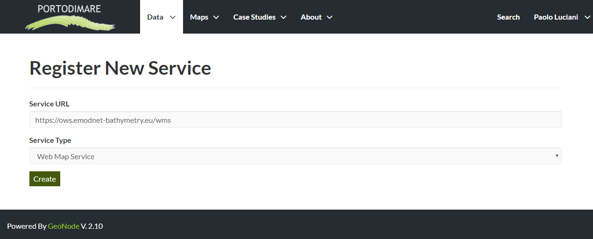

Using Remote Services¶
In GAIR you can add new layers not only by loading them from your disk but also using Remote Services. In this section you will learn how to add a new service and how to load resources in GAIR through that.
Warning
Click on the Remote Services link of the Data dropdown menu in the navigation bar.
Remote Services link
The page that opens will contain the list of the available services.
To configure a new service:
click on Register a new Service
type the Service URL
select the Service Type
click on Create
GAIR supports this types of remote services:
Web Map Service
Generic Web Map Service (WMS) based on a standard protocol for serving georeferenced map images over the Internet. These images are typically produced by a map server from data provided by one or more distributed geospatial databases. Common operations performed by a WMS service are: GetCapabilities (to retrieves metadata about the service, including supported operations and parameters, and a list of the available layers) and GetMap (to retrieves a map image for a specified area and content).
ArcGIS REST MapServer
This map service provides basic information about the map, including the layers that it contains, whether the map is cached or not, its spatial reference, initial and full extents, whether the service is allowed to export tiles and max tiles export count, etc. A set of operations that manage the state and contents of the service are allowed: Edit Service, Refresh, Update Tiles.
Once the service has been configured, you can load the resources you are interested in through the Import Resources page where you will be automatically redirected to. Take a look at the gif below to see the whole process.

A new Remote Service
Remote Service metadata